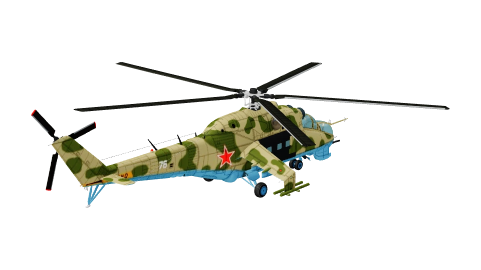
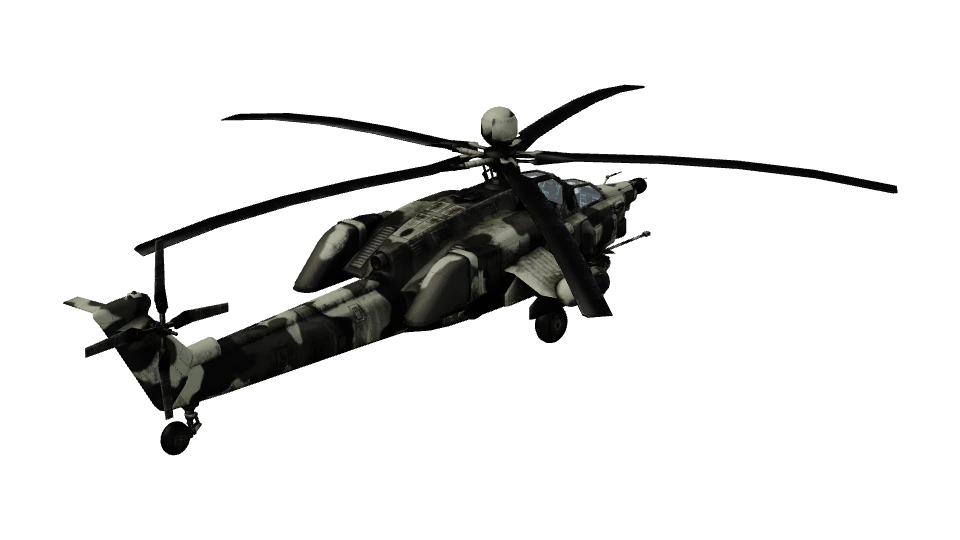
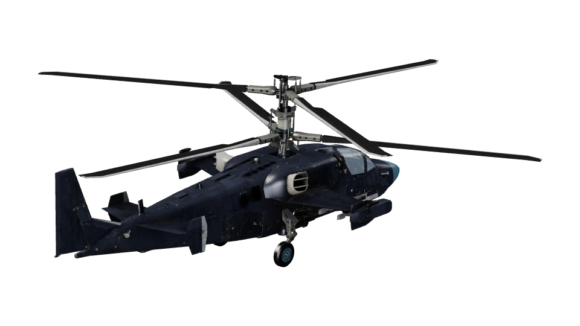
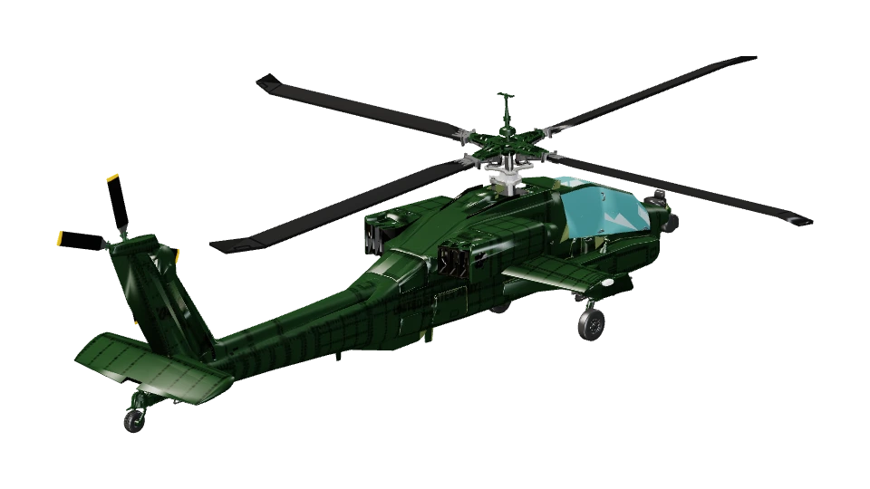
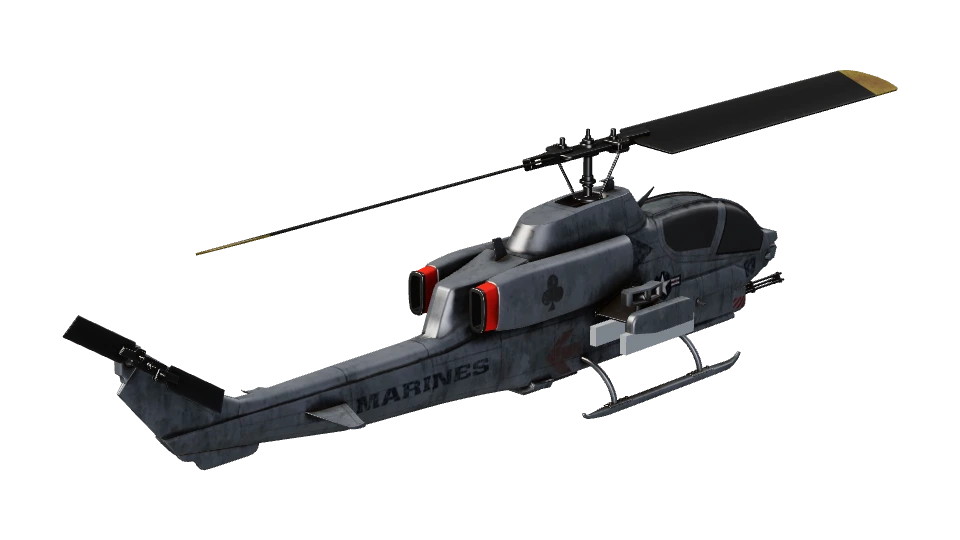

Вертолёты — отдельным событием
Четыре способа вынести игру на вертолётах из общего списка самолётов. Кадры статичные, в стиле нынешнего меню, с настоящими миниатюрами и кадром из игры. Пунктиром обведено то, что меняется. Ниже каждого макета — плюсы и минусы. Можно взять один вариант целиком или собрать из частей: например, баннер из Б и экран события из В.
А. Событие — отдельный пункт в списке режимов
Над обычными режимами — выделенный оранжевым пункт события с таймером. Справа — своя панель: сторона, сетка вертолётов (заблокированные — с замком, открываются в «Исследованиях»), задания события, кнопка «Взлёт» в цвете события. В «Вылете» вертолётов больше нет.
AIR
SUPERIORITY
опыт и серебро копятся в аккаунте
🎃 Туманная топьсобытие · ещё 11 дн.
Вылет
Оборона
Мульти-волна
Обучение
Онлайн
АрсеналСправкаНастройкиОб игре
⌘ Исследования
Событие · до 3 ноября
Туманная топь: вертолёты над болотом
Режим АркадаРеализм
Сторона ВостокЗапад
Вертолёт

Ми-24В«Штурм» · С-8
Ми-28Н«Атака»
Ка-52исследовать
Задания события · 2 из 5
Следующее: уничтожить РЛС «Лысая гора» на бреющем (ниже 30 м)
ВЗЛЁТ
новый пункт
своя панель события
Привычно: всё в том же меню, одно нажатие — и в бою.
В списке режимов шестой пункт, на телефоне тесновато.
Мало работы: та же панель, что у «Вылета», с другими данными.
Событие выглядит как ещё один режим, «праздника» мало.
Б. Баннер на фоне главного меню
Само меню не меняется, в «Вылете» снова только самолёты. На фоне — крупная карточка события: кадр «Топи», название, таймер и кнопка «Открыть». Нажатие ведёт на экран события (вариант В) или сразу к выбору вертолёта.
AIR
SUPERIORITY
опыт и серебро копятся в аккаунте
Вылет
Оборона
Мульти-волна
Обучение
Онлайн
Режим съёмки
АрсеналСправкаНастройкиОб игре
Хеллоуин · событие · 11 д 04 ч
Туманная топь
Ми-24, Ми-28, Ка-52 против AH-64, AH-1 и UH-1. Сумерки, туман и болото — летайте ниже радаров.
Открыть событиеПодробнее
⌘ Исследования
Вылет
За самолёт: прорвать ПВО и уничтожить цели
Режим АркадаРеализм
Эпоха IIIIIIIV
ПВО города СоветскаяЗападная
Подвеска
F/A-18C · GBU-12 ×4 + HARM ×2штурмовка
ВЗЛЁТ
баннер события
Заметно, но обычное меню не трогает: после праздника баннер просто убирается.
Закрывает часть фона, на узком телефоне его придётся сделать компактнее.
Удобно для следующих событий: та же карточка, другой кадр и текст.
Лишнее нажатие до боя.
В. Экран события — свой «хаб», как «Исследования»рекомендую вместе с Б
Отдельный экран на весь кадр. Слева — карта «Топи» и погода (вечер, сумерки, туман). В центре — крупно выбранный вертолёт, под ним лента остальных. Справа — награды события: полоса этапов за очки (окраска «Ночная», эмблема, серебро, ускоренное исследование вертолётов). Сверху — вкладки: «Вылет на вертолёте», «Оборона от вертолётов» (ПВО против налёта вертолётов) и «Награды».
🎃 Туманная топьещё 11 д 04 ч
Вылет на вертолётеОборона от вертолётовНаграды
✕
Карта
Погода
ВечерСумеркиТуман
Сторона
ВостокЗапад
Ми-28Н «Атака» ×8 · С-8 ×2
ВЗЛЁТ
Награды события · 640 / 1500 очков
🦇эмблема
🪙2000 серебра
🎨окраска «Ночная»
⚡×2 опыт вертолётов
🎃значок «Топь»
Задания
✓ Уничтожить 3 цели за вылет
✓ Пройти 5 км ниже 30 м
○ Поразить РЛС «Лысая гора» ПТУР
○ Сбить 2 вертолёта из ПВО
○ Вернуться на площадку с повреждением хвоста
весь экран — отдельный
Ощущается как праздник: своя атмосфера, награды, задания.
Больше всего работы: экран, задания, награды, хранение очков события.
Сюда же ложится будущий отдельный режим вертолётов, без перестройки меню.
Награды нужно согласовать с экономикой (серебро, ускорение исследований).
Г. Переключатель «Самолёты ⇄ Вертолёты» над режимами
Сверху левой колонки — переключатель. На «Вертолётах» меню перекрашивается в цвета события, а список режимов становится вертолётным: «Охота» (вылет на цели), «Засада» (ПВО против налёта вертолётов), позже «Конвой». Фон и музыка меню — «Топь».
AIR
SUPERIORITY
опыт и серебро копятся в аккаунте
СамолётыВертолёты 🎃
Охотавылет на цели «Топи»
ЗасадаПВО против вертолётов
Конвой · скоро
АрсеналСправкаНастройкиОб игре
⌘ Исследования · вертолёты
Охота · событие до 3 ноября
Найти и уничтожить цели в тумане
Режим АркадаРеализм
Погода ВечерСумеркиТуман
Запад

AH-64DHellfire ×8
AH-1Wисследовать
ВЗЛЁТ
переключатель
Вертолёты становятся «второй игрой» в той же оболочке — задел на отдельный режим после праздника.
Переключатель легко не заметить, нужна подсказка при первом входе.
Список режимов не растёт: у каждой половины свои 2–3 режима.
Перекраска меню и свои режимы — средний объём работы.
Кадр фона снят в игре: Ми-24 над «Туманной топью» в сумерках. Миниатюры — из «Исследований». Цвет события — тыквенно-оранжевый #e2762c, остальное — цвета нынешнего меню.